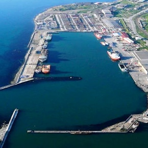
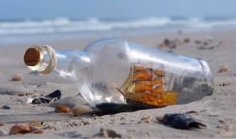

проект

проект
«МОРСКИЕ ПОРТЫ САХАЛИНСКОЙ ОБЛАСТИ»
На выставке будут представлены работы из оленьего рога, моржового клыка и других материалов из фондов Сахалинского областного краеведческого музея, Сахалинского областного художественного музея и Поронайского краеведческого музея.
В настоящее время Сахалинская область является одним из наиболее активно развивающихся регионов Российской Федерации. В связи с островным географическим положением региона большое значение для экономической жизни области имеют морские порты, являющиеся основными транспортными артериями, через которые проходит большая часть грузов, прибывающих и отправляемых с острова.
Развитие данной транспортной отрасли проходило в рамках сменяющихся экономических систем.
Порт – (лат. portus) – 1) гавань, оборудованная защитными сооружениями от непогоды и всеми необходимыми приспособлениями для стоянки, погрузочно-разгрузочных операций и ремонта судов; 2) портовый город, т. е. город, имеющий такую гавань.
Морские порты являлись и являются неотъемлемой частью экономической жизни региона. Их необходимость обусловлена:
- прилегающих территориях;
- организацией надлежащего функционирования портовых и региональных систем и объектов обеспечения безопасности мореплавания;
- ликвидацией последствий чрезвычайных происшествий и защитой морского судоходства и портов от незаконных актов.
Политические, экономические и культурные процессы оказывают прямое влияние на развитие морских портов как части инфраструктуры области. Например, в поселке Пригородное был построен и введен в эксплуатацию первый в России завод по производству сжиженного природного газа (СПГ), а также запущен в эксплуатацию морской порт Пригородное для отгрузки нефти и сжиженного природного газа (февраль 2009 года).
На протяжении всей истории Сахалинской области порты имели огромное значение для островной экономики. Изучение истории отдельных портов, профессиональной деятельности портовых работников является иллюстрацией истории региона, важным источником для понимания глобальных экономических процессов, происходивших в области в XIX–XXI вв.
Пополнение фондов музея предметами, связанными с историей развития и современным состоянием портов и флота Сахалинской области, является актуальным на сегодняшний день. Собранные коллекции могут стать материалом как для экспозиций, раскрывающих экономические особенности региона в целом, так и для выставок, приуроченных к знаковым датам из истории морских портов и флота Сахалинской области в частности и Российской Федерации в целом.
Участники проекта

Антоненко Виктория Михайловна
младший научный сотрудник Сахалинского областного краеведческого музея, аспирант Сахалинского государственного университета
Научные программы
Содержание и этапы реализации проекта
-
I этап: Подготовительный (2013 г.)
Задачи:
- 1. Изучение историографии вопроса, анализ опубликованных источников.
- 2. Проведение анализа фондов музея по данной теме.
- 3. Разработка плана комплектования фондов.
- 4. Разработка и размещение научно-исследовательского проекта на сайте музея.
-
II этап: Практическое осуществление (2013–2017 гг.)
Задачи:
- 1. Выезд в научные командировки в районы области:
- сбор предметов для фондов музея;
- интервьюирование ветеранов портов;
- фотофиксация этапов командировки, объектов исследования.
- 2. Составление научных отчетов по результатам командировок.
- 3. Проведение исследовательской работы для изучения и систематизации предметов, полученных в результате командировок.
- 4. Работа в ГИАСО, муниципальных архивах.
- 5. Подготовка научно-популярных, научных статей, презентаций по истории морских портов Сахалинской области.
- 1. Выезд в научные командировки в районы области:
-
III этап: Итоговый (2017–2019 гг.)
Задачи:
- 1. Подготовка к публикации материалов по истории сахалинских портов.
- 2. Создание информационного контента к электронному киоску на основе полученных предметов, документов, фото- и аудиоматериалов.
Экспедиции

Поездка в томари
Во время экспедиции были найдены редкие экземпляры бабочек
11 июля 2019
Поездка в Долинск
Во время экспедиции были найдены редкие экземпляры бабочек
9 июля 2019
Командировка в углегорском районе
11 июля 2019
Находки и открытия

Старый якорь с судна «Мария»
Публикации
- 1. Антоненко В. М. История Александровского-на-Сахалине порта в годы Великой Отечественной войны (по материалам ГИАСО) // Уроки Второй мировой войны и современность. Материалы II международной научной конференции, посвященной 70-летию окончания Второй мировой войны. Южно-Сахалинск, 2–4 сентября 2015 г. Владивосток: изд-во ОАО «ИПК «Дальпресс». 2016. С. 271–280.
- 2. Антоненко В. М. Перспектива включения научно-исследовательского проекта «Морские порты Сахалинской области» в музейное пространство региона // Из века в век… Материалы международной научной конференции, посвященной 120-летию со дня открытия первого музея на Сахалине (12–17 сентября 2016 г.). Южно-Сахалинск, 2017 С. 298–303. В печати.
Вопрос исследователю
Задать вопрос

Анна Сойкина
23 июля 2019
Два раза в год ходим в этот музей всем классом по школьной программе. Экскурсоводы были разные и всегда интересные, увлекающие детей в исторические темы.
Информации в залах предостаточно и для самостоятельного осмотра. Так же рекомендую путеводитель, всегда пригождается :). Сувенирная лавка богата выбором, на любой вкус и бюджет. Это действительно хороший музей, стоит сходить, дети бесплатно.
Михаил Крестов
15 июля 2019
Я читал про такие старые вещи
Анна Сойкина
23 июля 2019
Два раза в год ходим в этот музей всем классом по школьной программе. Экскурсоводы были разные и всегда интересные, увлекающие детей в исторические темы.
Информации в залах предостаточно и для самостоятельного осмотра. Так же рекомендую путеводитель, всегда пригождается :). Сувенирная лавка богата выбором, на любой вкус и бюджет. Это действительно хороший музей, стоит сходить, дети бесплатно.
Анна Сойкина
23 июля 2019
Два раза в год ходим в этот музей всем классом по школьной программе. Экскурсоводы были разные и всегда интересные, увлекающие детей в исторические темы.
Информации в залах предостаточно и для самостоятельного осмотра. Так же рекомендую путеводитель, всегда пригождается :). Сувенирная лавка богата выбором, на любой вкус и бюджет. Это действительно хороший музей, стоит сходить, дети бесплатно.
Лиза Донкин
15 июля 2019
Прикольные носочки
Михаил Крестов
15 июля 2019
Я читал про такие старые вещи
Анна Сойкина
23 июля 2019
Два раза в год ходим в этот музей всем классом по школьной программе. Экскурсоводы были разные и всегда интересные, увлекающие детей в исторические темы.
Информации в залах предостаточно и для самостоятельного осмотра. Так же рекомендую путеводитель, всегда пригождается :). Сувенирная лавка богата выбором, на любой вкус и бюджет. Это действительно хороший музей, стоит сходить, дети бесплатно.
Лиза Донкин
15 июля 2019
Прикольные носочки
Михаил Крестов
15 июля 2019
Я читал про такие старые вещи
Лиза Донкин
15 июля 2019
Прикольные носочки